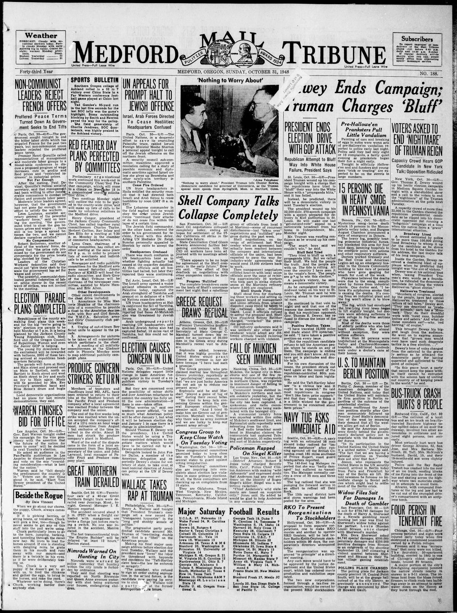

HN HN-571 · October 31, 1948 · Nature, Wildlife & Environment > Pollution, Contamination & Environmental Damage > Air pollution
Source: Indianapolis Times, p. 1 — original page; U.S. EPA, historical air-pollution episodes.
Report: “Smog Fatal to 18 in Pennsylvania†described overwhelmed hospitals, a declared emergency, and four days of dense polluted fog in the Monongahela Valley. Contemporary doctors suspected an industrial pollution component.
Assessment: The later established immediate toll was 20 deaths, with thousands made ill. The word “mysterious†reflects incomplete early medical and atmospheric information, not proof of an unknown exotic agent. Coal combustion, industrial emissions, and stagnant air are central to later analyses.
Identity-review candidate peers: HN-572:Algorithmic
Authentic scans retrieved from Historic Oregon Newspapers (University of Oregon). Article crops are located using the archive's own OCR word coordinates and rendered at native crop resolution; page scans are reduced-size access renditions. No images were generated, mocked, or retouched.

Not yet acquired. Queued for provider-specific acquisition testing (see source-acquisition manifest).
URL (preserved verbatim): https://newspapers.library.in.gov/?a=d&d=IPT19481031.1.1
Saved research report: Historical_Newspaper_Event_Research_553-577_2026-10-23.md
Evidence note: A newspaper report means a historical publication made a claim; it does not establish that claim as fact. Contemporary reporting is separated from later scholarly context and our own assessment.